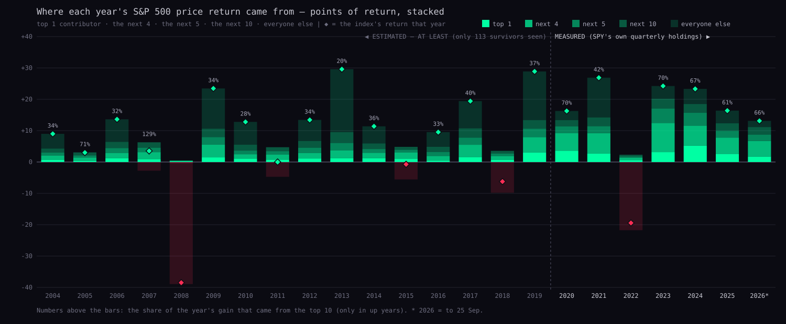
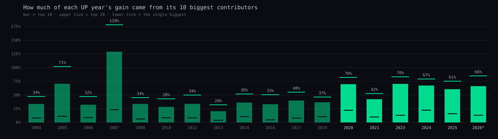
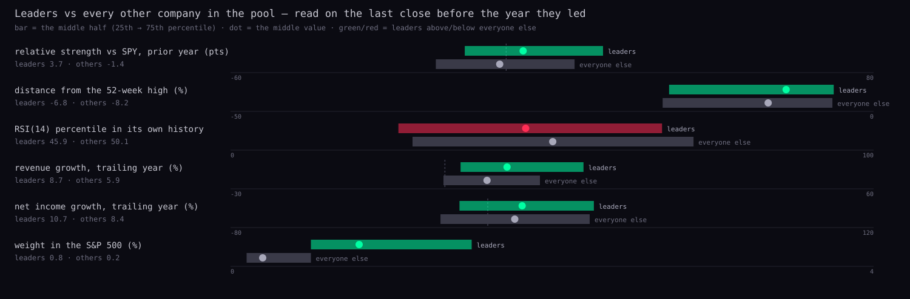
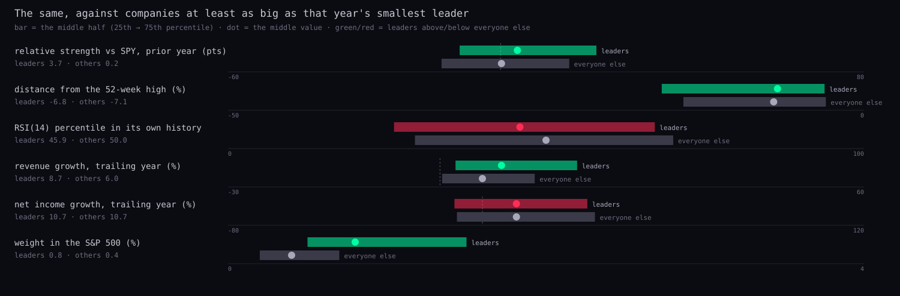
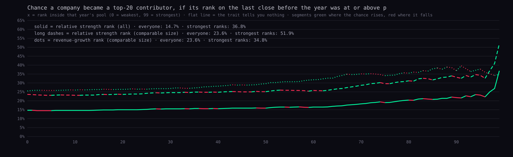
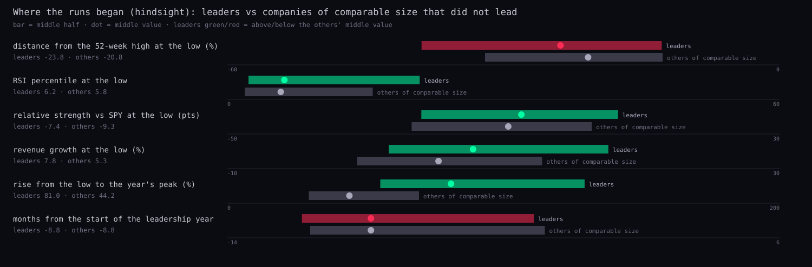
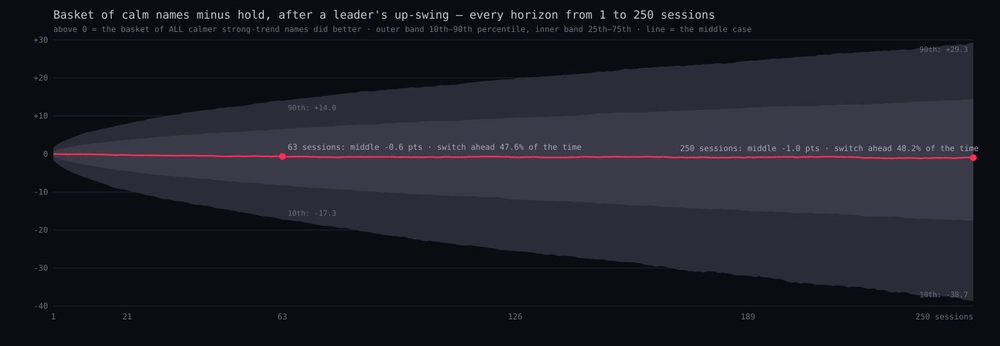
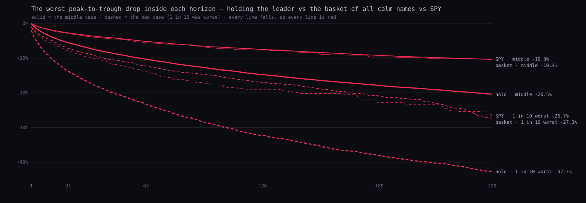
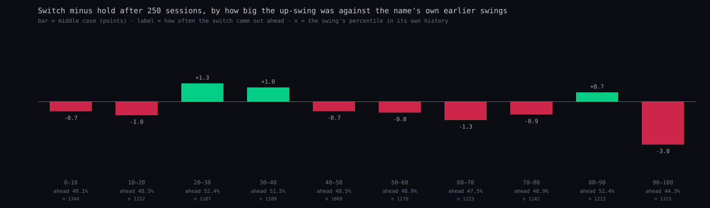

Each bar is one year's index return split into the points that came from the single biggest contributor, the next four, the next five, the next ten and everyone else. A contribution is the company's weight at the start of the quarter × its price return in the quarter, chained through the year so that the pieces add up to the index's return.

leaders-contribution-stack.svg next to this page.
leaders-top10-share.svg next to this page.| year | source | S&P 500 (price) | top 1 (pts) | top 5 | top 10 | top 20 | top 10 as a share of the gain | the five biggest contributors (points) |
|---|---|---|---|---|---|---|---|---|
| 2004 | estimated | +9.0% | +0.73 | +2.07 | +3.04 | +4.26 | 33.8% | XOM +0.73 · JNJ +0.37 · GE +0.37 · BAC +0.33 · QCOM +0.28 |
| 2005 | estimated | +3.0% | +0.34 | +1.36 | +2.12 | +3.06 | 70.6% | AAPL +0.34 · XOM +0.31 · MO +0.28 · UNH +0.24 · COP +0.19 |
| 2006 | estimated | +13.6% | +1.20 | +2.83 | +4.41 | +6.42 | 32.3% | XOM +1.20 · CSCO +0.60 · MSFT +0.35 · CVX +0.35 · C +0.34 |
| 2007 | estimated | +3.5% | +0.83 | +3.13 | +4.55 | +6.29 | 129.0% | AAPL +0.83 · XOM +0.82 · GOOGL +0.64 · MSFT +0.48 · CVX +0.36 |
| 2008 | estimated | -38.5% | +0.28 | +0.44 | +0.36 | +0.02 | down year | WMT +0.28 · AMGN +0.10 · GILD +0.04 · MCD +0.03 · CB -0.01 |
| 2009 | estimated | +23.4% | +1.49 | +5.53 | +7.93 | +10.62 | 33.8% | AAPL +1.49 · GOOGL +1.33 · MSFT +1.31 · IBM +0.80 · CSCO +0.60 |
| 2010 | estimated | +12.8% | +1.10 | +2.46 | +3.63 | +5.52 | 28.4% | AAPL +1.10 · C +0.44 · ORCL +0.37 · CVX +0.31 · XOM +0.25 |
| 2011 | estimated | 0.0% | +0.73 | +2.34 | +3.45 | +4.72 | down year | AAPL +0.73 · XOM +0.55 · IBM +0.42 · PM +0.34 · PFE +0.30 |
| 2012 | estimated | +13.4% | +1.13 | +2.87 | +4.55 | +6.70 | 33.9% | AAPL +1.13 · BAC +0.60 · JPM +0.39 · CMCSA +0.37 · C +0.37 |
| 2013 | estimated | +29.6% | +1.20 | +3.68 | +6.05 | +9.51 | 20.4% | GOOGL +1.20 · MSFT +0.76 · BRK-B +0.60 · AMZN +0.57 · XOM +0.55 |
| 2014 | estimated | +11.4% | +1.21 | +2.93 | +4.13 | +5.92 | 36.3% | AAPL +1.21 · BRK-B +0.51 · MSFT +0.49 · META +0.40 · INTC +0.34 |
| 2015 | estimated | -0.7% | +0.99 | +3.05 | +3.90 | +4.84 | down year | AMZN +0.99 · GOOGL +0.97 · META +0.44 · MSFT +0.43 · HD +0.21 |
| 2016 | estimated | +9.5% | +0.45 | +1.86 | +3.17 | +4.83 | 33.2% | BRK-B +0.45 · JPM +0.44 · AAPL +0.34 · BAC +0.32 · MSFT +0.31 |
| 2017 | estimated | +19.4% | +1.52 | +5.49 | +7.77 | +10.73 | 40.0% | AAPL +1.52 · AMZN +1.07 · MSFT +0.98 · META +0.97 · GOOGL +0.94 |
| 2018 | estimated | -6.2% | +0.72 | +1.89 | +2.67 | +3.55 | down year | AMZN +0.72 · MSFT +0.56 · MRK +0.23 · PFE +0.19 · LIN +0.18 |
| 2019 | estimated | +28.9% | +3.05 | +7.93 | +10.62 | +13.39 | 36.8% | AAPL +3.05 · MSFT +2.07 · META +1.02 · GOOGL +0.97 · AMZN +0.82 |
| 2020 | measured | +16.3% | +3.62 | +9.24 | +11.34 | +13.35 | 69.8% | AAPL +3.62 · AMZN +2.20 · MSFT +1.84 · GOOGL +0.92 · NVDA +0.66 |
| 2021 | measured | +26.9% | +2.70 | +9.19 | +11.41 | +14.18 | 42.5% | MSFT +2.70 · AAPL +2.21 · GOOGL +2.12 · NVDA +1.28 · TSLA +0.89 |
| 2022 | measured | -19.4% | +0.51 | +1.34 | +1.76 | +2.31 | down year | XOM +0.51 · CVX +0.29 · MRK +0.22 · LLY +0.18 · COP +0.15 |
| 2023 | measured | +24.2% | +3.15 | +12.43 | +17.05 | +20.16 | 70.4% | MSFT +3.15 · AAPL +2.90 · NVDA +2.69 · AMZN +1.90 · GOOGL +1.79 |
| 2024 | measured | +23.3% | +5.22 | +11.58 | +15.70 | +18.48 | 67.4% | NVDA +5.22 · AAPL +2.11 · AMZN +1.55 · AVGO +1.35 · GOOGL +1.34 |
| 2025 | measured | +16.4% | +2.60 | +7.79 | +9.94 | +12.34 | 60.7% | GOOGL +2.60 · NVDA +2.56 · AVGO +1.08 · MSFT +0.93 · AAPL +0.62 |
| 2026* | measured | +13.1% | +1.72 | +6.69 | +8.68 | +11.14 | 66.2% | AAPL +1.72 · NVDA +1.59 · MU +1.53 · AMD +1.16 · INTC +0.69 |
* 2026 runs to 2026-09-25. Points are percentage points of the index's price return. "Down year" = the index fell, so a share of the gain is meaningless.
"Leader" = one of the year's top 20 contributors. The comparison group = every other company in the same pool on the same day (2,901 company-years, 425 of them leaders, base rate 14.7%). "Comparable size" keeps only companies at least as big as that year's smallest leader (1,803 company-years, base rate 23.6%).

leaders-traits-all.svg next to this page.
leaders-traits-comparable.svg next to this page.
leaders-base-rate.svg next to this page.| cloud order on that close | company-years | of them leaders | chance of leading |
|---|---|---|---|
| bull order | 1277 | 194 | 15.2% |
| mixed | 1206 | 164 | 13.6% |
| bear order | 418 | 67 | 16.0% |
| price vs the four cloud lines | company-years | of them leaders | chance of leading |
|---|---|---|---|
| above all | 1106 | 151 | 13.7% |
| between | 1326 | 203 | 15.3% |
| below all | 469 | 71 | 15.1% |

leaders-run-start.svg next to this page.For each leader: the lowest low between the start of the year before and its highest close in its leadership year. The same rule applied to every company of comparable size that did not lead gives the yardstick. The lows look alike; what separated the two groups came after the low.
Alan's words: "the market is more bullish than bearish — better to be long-leaning; if I take profits on a volatile name, shift the money into another good one with a lesser risk profile." This is a research question, not advice. The test: every completed up-swing (pivot rule, 10 bars each side) of every name that was ever a top-20 contributor. The swing high is only known 10 sessions later, so both paths start at that close. Hold = stay in the name. Switch = an equal-weight basket of every other company in the cache that, on that same day, had the Station bull order with price above all four lines AND had moved less than the name over the same swing. SPY is the third path.

leaders-rotation-fan.svg next to this page.
leaders-rotation-drawdown.svg next to this page.
leaders-rotation-by-gain.svg next to this page.| after | hold: 10th / middle / 90th | switch: 10th / middle / 90th | SPY middle | switch − hold, middle | switch ahead | worst drop, middle: hold / switch | worst drop, 1 in 10: hold / switch |
|---|---|---|---|---|---|---|---|
| 21 sessions | -8.7% / +0.8% / +10.8% | -4.3% / +0.9% / +4.8% | +1.4% | -0.05 pts | 49.6% | -5.6% / -2.8% | -13.9% / -7.3% |
| 63 sessions | -13.0% / +3.0% / +20.5% | -5.5% / +3.0% / +9.6% | +3.5% | -0.49 pts | 48.3% | -10.3% / -5.2% | -23.1% / -12.2% |
| 126 sessions | -16.9% / +6.0% / +31.8% | -5.8% / +5.7% / +15.7% | +6.1% | -0.69 pts | 48.3% | -14.8% / -7.5% | -32.2% / -16.9% |
| 250 sessions | -21.7% / +10.8% / +52.1% | -5.5% / +11.6% / +27.1% | +12.3% | -0.67 pts | 48.9% | -20.5% / -10.4% | -42.4% / -26.6% |
The table only reads four points off curves that run through every horizon 1 → 250; the JSON keeps every percentile 1..100 at 15 horizons.
mutual-fund-disclosures), 30 Sep 2019 → 30 Jun 2026. Share classes of one company are merged by CUSIP issuer.historical-market-cap for 113 companies; before Nov 2006 the first cap is scaled back by price. Membership from FMP's S&P 500 add/remove list.research/statistics/s9-research.mjs): 10/10 wick pivots, Station cloud order, RSI(14) own-history percentile.Data files next to this page: leaders-concentration.json, leaders-traits.json, leaders-rotation.json. Code: research/statistics/leaders-*.mjs. Tests: tests/statistics-leaders.test.mjs.